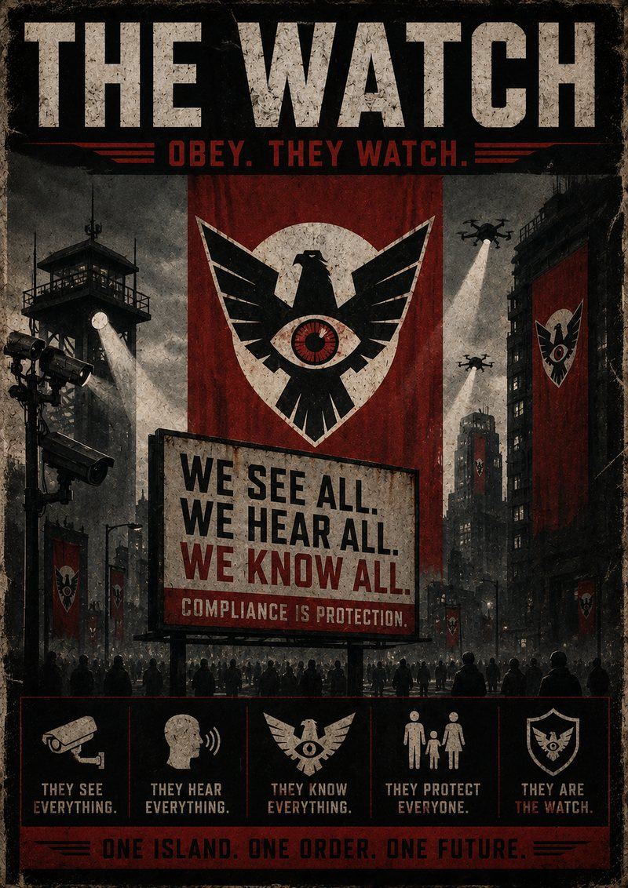
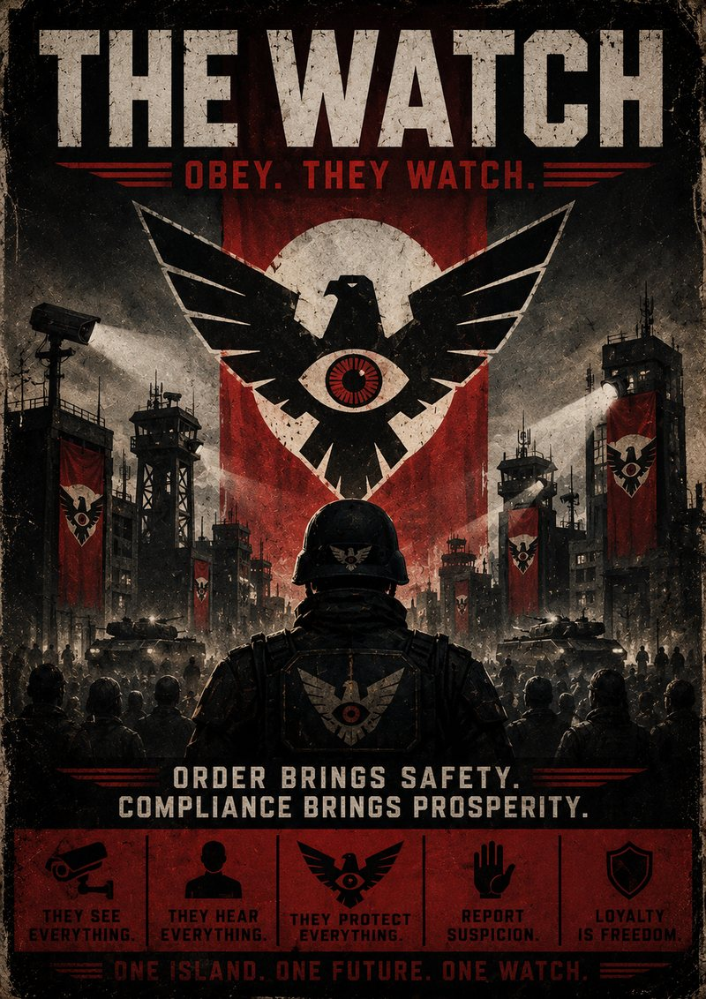

This record exists so that every resident of the island understands the truth of our shared history — not the rumors spread by agitators, but the facts. Read it carefully. Share it with your family. Those who understand the past do not repeat its mistakes.
The Island Before
Before The Watch, the island called itself free. In practice, it was fragile.
Power failed in the outer towns for days at a time. The docks were run by men who answered to no one. Crime in the city went unrecorded because there was no one to record it. The island's so-called government held elections, made promises, and let the roads crumble between them.
The people were not safe. They were simply unwatched. There is a difference, and they learned it too late.
Our Arrival
We came at the island's own invitation.
The government, unable to secure its most sensitive facility, contracted our organization to provide what it could not provide itself: order. We brought equipment. We brought wages. We brought the first reliable power the outer sectors had seen in a generation.
We asked for cooperation. The island gave it gladly. This is a matter of record, whatever you may now hear whispered.

The Transition
It is said by some that The Watch "seized" the island. This is false.
The previous government was offered every opportunity to govern responsibly. It declined. When it became clear that its leaders cared more for their offices than for the people they had abandoned, those leaders stepped aside. Some left the island. Others chose not to be found. We do not pursue cowards.
In their absence, someone had to keep the lights on. Someone had to keep the food moving and the docks running and the children safe in their beds. We did not ask for that responsibility. We accepted it.
The New Order
What the disloyal call "restriction," the wise call "structure."
Checkpoints exist so that no stranger moves through your neighborhood unseen. Curfews exist so that the night belongs to the law-abiding, not the lawless. Cameras exist not to watch you — the honest citizen has nothing to fear from being seen — but to watch over you.
We hear the complaints. We weigh them against the silence of every family that now sleeps soundly. The arithmetic is not difficult.
On the Subject of the Missing
You will hear it said that people "disappear."
People relocate. People are reassigned. People who break faith with the island are removed from the company of those who keep it. This is not cruelty. It is hygiene.
A body removes what threatens it. So does a healthy society. To call this injustice is to call the immune system a murderer.

On the Resistance
There are those who hide in the forests and call themselves "The Dawn."
We will be plain: they are not freedom fighters. They are the residue of the old disorder — the smugglers, the malcontents, the ones who profited when no one was watching and now resent being watched. They romanticize a past that nearly killed this island. They offer you chaos and call it hope.
When you see their marks painted over our notices, do not be afraid. Be grateful. It means there is still something here worth defacing — something we built, that they could only ruin.
Report them. Not for our sake. For your neighbors'.
The Future
The island is safe now. It is fed, lit, and ordered. Children grow up never having known the fear their parents knew.
This is the gift The Watch gave the island. We ask only one thing in return, and we ask it of every citizen, every day: Obey. They Watch. And we always will.